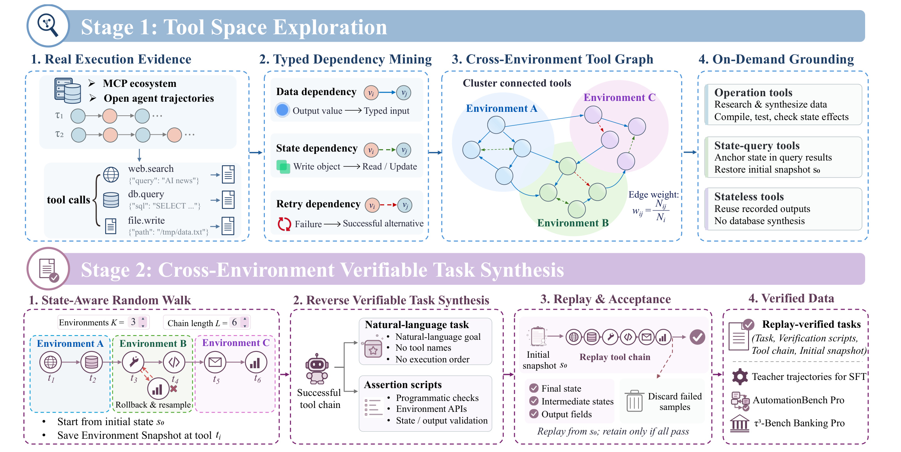
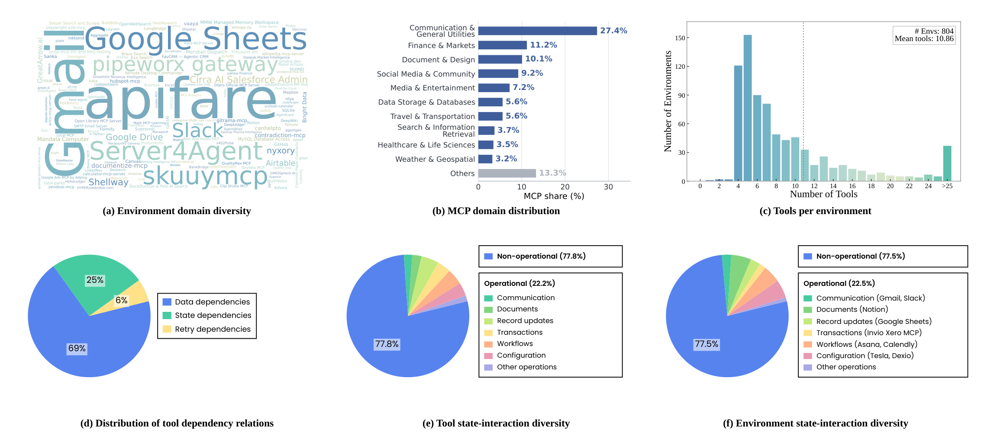
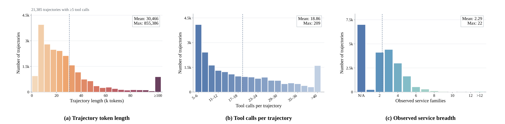
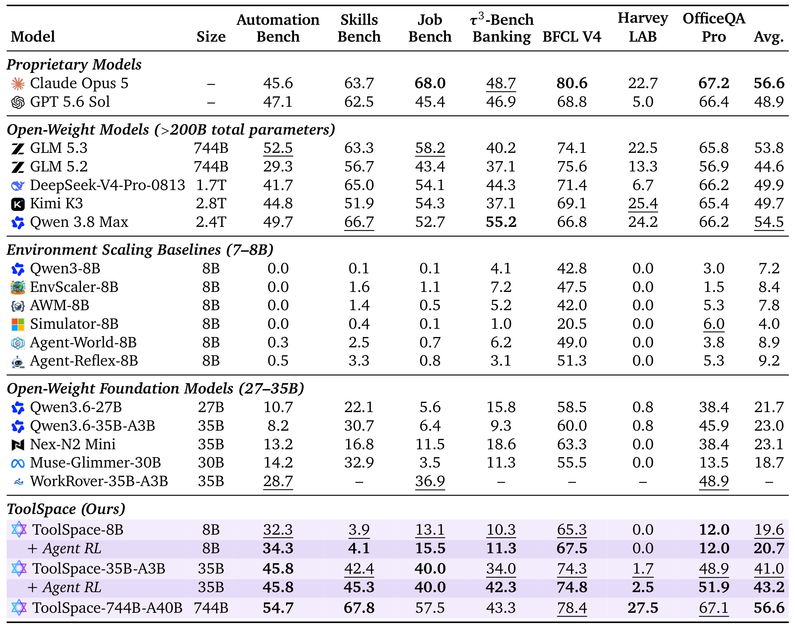
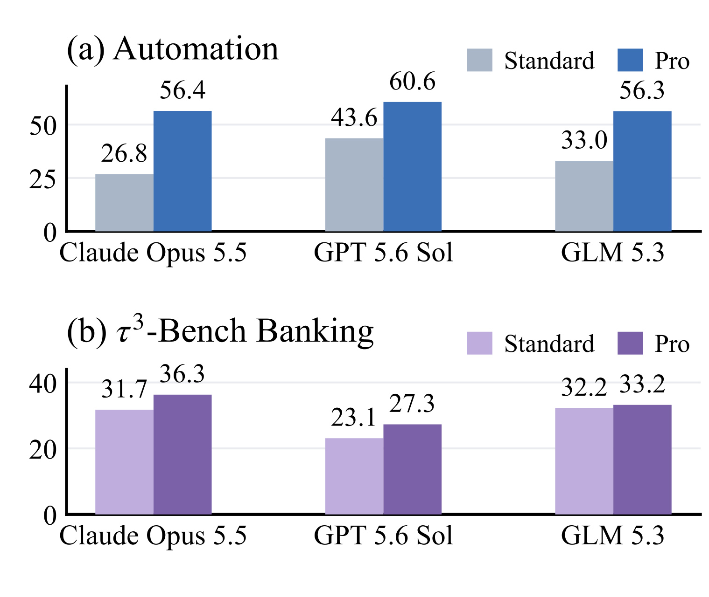
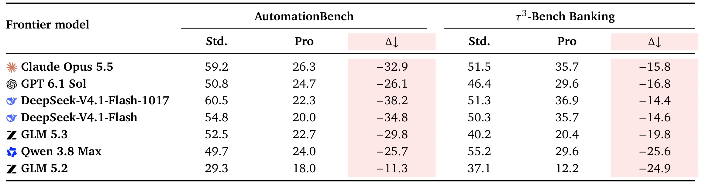
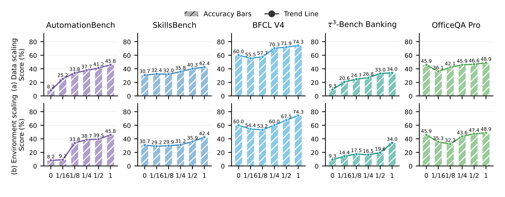
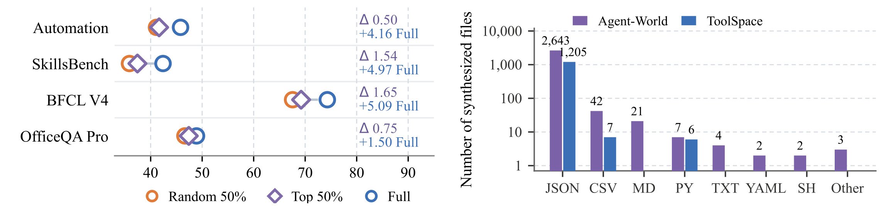
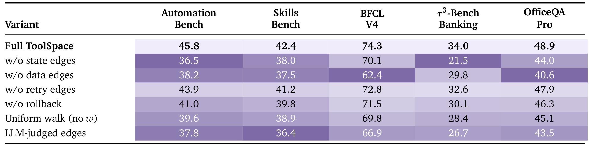

ToolSpace：从真实工具依赖合成长程 Agent 训练环境
ToolSpace 研究如何为大模型 Agent 构建可执行、可检查、跨多个服务的长程训练任务。第一作者 Guanting Dong 来自中国人民大学，共同一作还包括复旦大学的 Zhichao Sun 和中国人民大学的 Xinyu Yang，合作机构包括上海交通大学。论文于 2026 年 11 月 3 日首次提交，本文依据完整原文及协调者核验的事实包整理，访问日期为 2026 年 11 月 5 日。论文入口：arXiv:2611.05036。官方代码仓库已核验可公开访问；本次没有重新训练模型或独立复跑全部基准。
现有 MCP 环境扩展方法通常先合成数据库和场景，再从中派生工具与任务。这会使工具接口偏离真实接口、工具组合缺乏实际执行依据，而且任务很少跨越多个环境。
1. 背景和问题
长程 Agent 的难点不只是把自然语言转换成一个正确的函数调用。真实办公任务常要求模型先查找文件，再读取其中的标识符，用这个标识符修改数据库中的对象，最后通知相关人员。每一步单独看都可能很简单，但后一步依赖前一步返回的数据、写入后的系统状态以及失败时可选的替代路径。工具数量变多只是给出更多动作，真正需要学习的是如何把这些动作组成有因果联系、状态连续的执行链。ToolSpace 因而把训练数据的基本对象从孤立任务或孤立环境转向有执行见证的工具组合，强调模型需要学到连接服务的结构，而不只是记住工具名称和参数格式。
传统环境扩展流程从一个合成数据库出发，描述一个场景，再生成围绕这个场景的工具和问答。这种做法容易规模化，因为可以批量生成相似数据库和任务，也容易在封闭环境内检查结果。然而数据库先行会反向限定任务空间：某个合成客户管理数据库里有什么字段，任务就往往围绕这些字段展开；一个办公文档环境里的工具即使数量很多，也不一定能与另一个环境的银行查询或消息操作组合。模型可能学会了在局部世界中正确调用接口，却仍然不能处理一个请求同时涉及文件、表格、消息和持久状态的情况。作者不是反对合成环境，而是认为环境应该服务于已经可执行的工具依赖，不能先随意发明世界再要求工具适配它。
接口真实性与执行真实性也必须分开。来自真实服务的工具定义，可以保证函数名和参数 schema 与真实接口一致；但如果模型只凭语言直觉把这些工具连在一起，链条仍可能是假的。比如两个接口都接受一个字符串，并不说明前一接口返回的字符串就是后一接口需要的对象标识；两个调用共享数值十，也不意味着存在数据依赖。相反，同一文件在写入后被读取，即使两个调用没有直接传递相同返回值，也可能存在关键状态依赖。ToolSpace 试图通过带类型的数据流、可识别对象的状态变化和失败后成功替代三类证据，减少“语义上听起来合理、执行时却不成立”的连接。
真实轨迹还有另一层价值：它们暴露了环境中反复出现的工作模式。两个工具经常相邻，并且下游输入确实可追溯到上游返回，说明这种连接至少在已记录的任务分布中被使用过。把这些连接汇总成图，可以看到哪些服务通过共同对象形成工作流，哪些状态变化经常需要后续检查，以及哪些失败会触发替代接口。作者随后从图中随机游走，形成新的执行链，而不直接复制原任务。这里的创新位置在于重组已见证的局部关系，生成更长且跨环境的新组合，而非让教师模型从零编造整个业务过程。
不过，局部有效并不能自动推出全局有效。一条边在某次真实轨迹里成立，不保证在新链条的当前状态下仍然成立：对象可能已被删除，参数可能不满足权限或状态前提，之前的操作也可能改变后续工具的含义。因此 ToolSpace 不能只在静态图上抽样，它还需要绑定初始快照、跟踪每一步执行状态、在失败时回滚，以及从初始状态完整重放。图给出候选路径，环境执行决定路径是否能走，验证脚本决定最终结果是否符合任务。这三者分别处理结构可达、动态可执行与结果正确，阅读时不能把其中一个检验误当成另外两个检验的替代。
对大模型训练而言，论文想补的能力不是一般语言知识，而是跨服务的工具编排。它把长链任务拆成自然语言目标、初始环境、可执行轨迹和验证规则，让监督微调看到完整成功过程，也让强化学习得到可执行的二元奖励。这里的“可验证”含义很具体：检查器可以判断预设状态、轨迹和返回字段是否满足条件。它并不表示所有业务语义、权限限制或用户隐含需求都得到形式化证明。检查器设计仍是任务质量的组成部分，若目标写错或遗漏副作用，错误任务也可能稳定通过重放。
对推荐与搜索工程，最直接的联系是多步骤分析和运营助手：查询实验数据、读取配置、分析异常、组织证据和生成报告，都需要处理不同工具的依赖。但本论文的主要贡献服务于通用 Agent 数据与环境构建，所以主类别是 LLM，不能再计入推荐算法配额。论文也没有证明推荐线上收益。可迁移的是如何从实际工作轨迹提炼训练任务的办法，而不是把七项 Agent 基准提升直接换算成点击率或广告收入。若未来移植到推荐平台，首先需要为特征、训练、发布和实验操作建立独立沙箱，并重新设计业务验证器。
还有一个容易混淆的概念是环境覆盖和任务覆盖。连接一百个服务并不意味着理解了一百种真实业务流程；同一个服务中的只读查询、创建对象和更新对象，所要求的前提与失败恢复也不一样。作者选择在调用配置级别建节点，再用真实关系连接，能够比只列服务名称更精细地描述训练空间。不过它仍受原始材料决定：材料里没发生过的罕见对象状态，图可能没有对应关系。因而论文的路线更适合被理解为以真实证据约束合成自由度，而不是从有限轨迹恢复整个开放世界。这个边界也决定了实验应同时看同底模增益、组件消融和覆盖分布，而不是只盯住一个总平均。
观察论文实验时，还要区分合成器本身的正确性与训练后策略的成功率。一个始终能重放的训练样本只说明教师给出了可行路径，学生仍可能选错工具、引用错误对象或漏做后续检查。工具图改善的是可学习材料，不是替模型执行测试任务。
2. 方法
2.1 真实轨迹与工具图
论文先定义一条训练样本的组成，使合成目标和验证依据绑定，而不是先写出问题再临时找答案。其任务对象可以整理为原文的四元组：
符号解释：$q$ 是不泄露工具名称及执行顺序的自然语言任务，$V$ 是验证脚本集合，$\omega$ 是成功的工具执行链，$s_0$ 是初始状态快照。四个部分缺一不可：只有问题与答案，无法重现中间操作；只有轨迹，不能保证模型收到的是不泄露解法的目标；没有初始快照，同一串调用在另一状态下可能执行出不同结果。训练时成功轨迹可被用作监督，评测时检查器从环境状态及返回值判定任务完成，保留了“如何做”和“做完是什么样”两种信息。
原始材料来自真实 MCP 生态和公开 Agent 轨迹。作者对真实服务交互、真实工作区交互与合成工具轨迹分别设定可信度和过滤强度，较弱来源必须匹配真实工具名和 schema。真实工作区轨迹只保留显式工具调用，排除外层 shell 包装，避免把任意命令字符串当成可组合的结构化接口。合并语料写作：
符号解释：$\mathcal M_{\mathrm{MCP}}$ 与 $\mathcal M_{\mathrm{open}}$ 分别表示两类轨迹来源，$f_t$ 是第 $t$ 次工具调用，$x_t$ 是输入，$o_t$ 是输出。时间顺序在每条轨迹内部保留，不能将不同任务的相邻记录任意连接。节点不只是工具名，还包含输入输出 schema 以及归一化参数配置；同一工具的不同配置可以形成不同节点，因而图比“有哪些 API”更接近实际执行模式。

Figure 2 上半部分把四个过程按顺序连接：真实执行证据先进入依赖挖掘，依赖形成跨环境工具图，再决定哪些数据需要实体化。蓝色区域里三类边分别代表数据、状态和重试关系；它们不是由教师模型主观打分，而是按确定性规则从相邻调用中提取。下半部分才开始合成训练任务：绑定环境快照的随机游走遇到失败会回滚，通过后再逆向生成问题与断言，最终从初始状态重新执行。这个先后顺序解释了为什么论文称它为工具中心：图与链条在前，数据库和自然语言任务围绕可执行链条准备。图右侧的验证输出同时服务于监督轨迹、强化学习和更难的 Pro 评测；这些出口共享底层构建机制，但不是同一个数据划分。尤其要注意，图中的“验证通过”只对应已构建的断言，不应被扩大解释为真实企业系统中所有权限、异常和副作用均已覆盖。
数据边要求下游参数使用上游返回值，而且字段类型匹配；状态边要求前一步改变某个环境对象，后一步读取或继续改变同一对象；重试边要求前一调用出错、切换工具后成功。对数据边，常见常数的偶然相等需要排除。图的边权使用相邻转移频率：
符号解释：$N_i$ 是节点 $v_i$ 在轨迹中的出现次数，$N_{ij}$ 是 $v_j$ 紧随 $v_i$ 的次数，$w$ 表示这种局部连接在来源语料中的经验权重。作者会剪除低频边，并检查数据来源可追溯性。该权重描述观察到的转移频率，不能直接当成任务价值或执行成功率；高频连接更易被采样，也可能让稀有但重要的恢复路径覆盖不足。
2.2 按需环境与状态感知游走
图建立后，作者对其加权无向投影按连接密度聚类，结合真实 MCP 服务的工具配置形成环境。这里不是把每个服务都完整模拟一次，而是分三种处理。包含创建、修改或删除操作的环境需要合成持久数据库，并通过单元测试和状态转移检查；状态查询工具可以用记录输出锚定初始快照；无状态查询则复用匹配调用的已有返回，不必合成数据库。这个设计减少了不必要的数据生成，也限定了可靠性范围：静态返回的重放验证，不等于实时外部 API 的可用性、时效性或网络容错验证。环境能否重现历史交互与能否支持开放世界中的任意新参数，是不同问题。只有需要持久副作用的部分才承担完整数据库的构建工作，体现的是选择性准备环境，而非完全放弃模拟状态。
随机游走从绑定数据库与快照的节点出发。每一步先判断邻居是否可用：参数能否由先前返回或当前快照填入，状态前提是否成立，参数来源是否可追溯。只有通过这些条件的邻居才进入采样集合：
符号解释：$\mathcal A_t$ 是第 $t$ 步满足依赖及状态条件的可选邻居集合，分子是选中边的经验权重，分母仅对可选邻居归一化。与在全部邻居里抽样后再补参数不同，论文先限制可行性再决定走向。如果集合为空或多次回滚仍无法前进，整条链会被丢弃。目标同时限制链长 $L$ 和跨越环境数 $K$，因此“走得长”与“跨得多”是可调维度，不应只用 token 数衡量长程难度。
若调用执行失败，或者新状态不满足刚刚通过的依赖关系，系统丢弃这一步、恢复先前快照，再从前一节点选择其他邻居。这样失败并不必然使整条轨迹报废，但必须确保副作用可以回滚。对真实环境中不可逆发送、外部支付等动作，这一假设不能直接套用，通常要用模拟器或事务化沙箱。论文保留的重试依赖说明模型可以看到恢复路径，随机游走中的回滚则是数据合成器的控制机制；两者不是同一个东西，前者是可学习的任务行为，后者帮助构造有效样本。原文 Figure 3 展示二十八次调用跨六个环境、经历两次回滚的交互实例；本笔记用总体框架与采样公式解释同一机制，省略界面截图以避免重复。
2.3 逆向任务、回放验收与训练
得到可执行链条后，教师模型从状态变化逆向写自然语言目标，并生成验证脚本。目标不能直接包含工具名或调用顺序，避免把规划答案暴露给学生。验证由三部分组成：
符号解释：$V_{\mathrm{state}}$ 检查最终状态，$V_{\mathrm{trace}}$ 检查关键中间快照，$V_{\mathrm{out}}$ 检查返回结果必需的字段。只有终态检查可能漏掉中间错误操作，只有返回文本检查又可能接受模型口头声称完成。三类检查结合后仍要从 $s_0$ 重放，全部通过才能入库。这个并集表达的是验收覆盖面的组合，不是断言的完备性证明；验证器本身与任务语义的一致性仍需人工抽查。
监督微调使用通过验证的教师轨迹。作者用 Kimi K3 完成逆向任务和教师轨迹生成，最终获得三万四千三百七十六条 SFT 数据。强化学习另有六百五十三条样本，候选通过三十五 B 模型 Pass@16 筛选，仅保留十六次中一到两次成功的任务，以得到既有学习空间又并非完全不可解的训练目标。强化学习采用 GRPO 的裁剪重要性比目标：
符号解释：$G$ 是同一任务的采样轨迹数量，$y_i$ 是一条生成轨迹，$r_{i,t}$ 是当前策略相对 rollout 策略在该 token 上的概率比，$\hat A_i$ 是组内标准化优势，裁剪范围在实验中为零点八到一点二八。按轨迹长度平均使每条轨迹的 token 贡献受到归一化，但不能据此认为长短轨迹在所有梯度统计上完全等价。原文采用异步训练，允许最大策略滞后四步，因此重要性比和裁剪仍然有实际作用，不能简单称为严格同步的在策略更新。
符号解释：$R_i$ 是执行检查全部通过时为一、否则为零的奖励，$\mu_g$ 和 $s_g$ 是同一任务采样组内奖励均值和标准差，$y_i^*$ 代表检查所需参考信息。常数用于数值稳定。奖励依赖验证代码，因而训练会强化“满足现有检查”的行为；若检查遗漏负面副作用，奖励不会自动补上。原文强化学习训练四十八步，学习率为 $2\times10^{-6}$、总训练批量二百五十六、组大小十六。最终推理只部署训练后的策略及测试环境工具，不需要在线运行整套工具图合成系统。教师承担任务合成并不意味着测试时继续调用教师，不能把训练数据成本和学生推理成本混成一个数字。
3. 实验结果
3.1 训练数据和环境覆盖
作者收集超过二十万条原始 Agent 与工具交互轨迹，再通过过滤、依赖建图和回放生成训练集。需要区分原始轨迹数量、可识别环境数量与最终保留样本数：它们分别表示材料规模、服务覆盖和训练数据，不是可以相加的任务总数。原文声明在任务与轨迹两个层面排除与评测集重叠的任务、调用序列和初始状态；这是一项作者报告的数据去污染策略，本次没有获得完整语料并独立证明零污染。

Figure 4 包含六个统计面板，其中依赖类型图显示数据关系占约六成九，状态关系约四分之一，重试关系约百分之六；这解释了为什么不能仅用参数流构图，状态依赖虽不是最多，却覆盖持久修改后的读取与继续操作。工具层面的非操作类占百分之七十七点八，环境层面的非操作类占百分之七十七点五；两个分母不同，前者统计工具、后者统计包含至少一个操作工具的环境，不能互换。右上工具数分布还有明显长尾，环境平均约十点八六个匹配工具，最大四百三十六；均值没有表达最复杂服务的接口负担。总计八百零四个环境中，一百八十一个含操作工具、六百二十三个不含操作工具。按需合成能节省生成工作量，恰恰建立在大量工具无需持久数据库这一分布特征上，若目标域几乎全部是写操作，收益可能缩小。左上的词云只说明环境名称分布，不能用字体大小推断独立技能难度，后面的操作分类与依赖分类才是解释构建策略的关键。

Figure 5 的三幅直方图统计的是至少五次工具调用的二万一千三百八十五条轨迹，而不是全部三万四千三百七十六条 SFT 样本。左图 token 长度均值三万零四百六十六、最大八十五万五千三百八十六，显示少量超长样本拉高均值；中图工具调用均值十八点八六、最大二百零九；右图环境数均值二点二九、最大二十二，至少百分之六十六点二跨两个及以上环境。三个面板共同说明训练材料确实包含长链与跨服务组合，但不能只从最大长度推断模型已经学会处理同样长的任意真实任务。轨迹 token 数包含调用和观察文本，工具返回越啰嗦也会增大长度，所以需要同时看调用次数和环境数。观察服务族的覆盖只是实际轨迹中的范围，不等于每个工具都经过均衡训练。数据里既有多环境样本，也有较短样本，训练收益不能全部归因于最长尾部的极端轨迹。
3.2 七项基准主结果
评测覆盖 AutomationBench、SkillsBench、JobBench、银行工具对话、BFCL V4、Harvey LAB 和 OfficeQA Pro。七项分数在总平均里按任务等权算术平均，各自数据规模和难度没有在这个平均中重新加权。作者本地结果平均三次独立运行，但比较表来源优先官方榜单，其次提供方公布成绩，缺失时才用官方 harness 复现；外部成绩按原发布值使用。因此表格不是所有模型都由作者在同一硬件、同一时间和同一运行环境重测的统一竞赛。任务指标都以分数展示，并不意味着一个分数点在所有场景中对应同等商业价值。

Table 1 最有解释力的是相同底模训练前后的变化。三十五 B 底模 Qwen3.6-35B-A3B 的平均分从二十三点零升到四十一点零，加 Agent RL 后为四十三点二；分别是十八点零和额外二点二个分数点，而非相对百分之十八和百分之二点二。AutomationBench 从八点二升至四十五点八，说明跨工具工作流提升很大；但 Harvey LAB 只有零点八升至一点七，强化学习后也仅二点五，不能以平均分掩盖法律任务上的低绝对成功率。八 B 模型平均从七点二到十九点六，再到二十点七，同尺寸环境扩展基线最高平均九点二，但八 B 的 Harvey LAB 仍为零。规模较小的模型并未因此获得通用专业工作能力。七百四十四 B 的 ToolSpace 平均五十六点六，与 Claude Opus 5 的公开平均相同；它在 AutomationBench 上较高，在银行任务和 BFCL V4 上却较低，所以“平均相当”不等于逐任务全面胜出，也不能推广为所有实际产品体验相同。按同尺寸分组标出最佳和次佳，是表格提供的比较方式，跨组的总参量与激活参量也不能直接混作同等成本。
训练预算同样影响解释。八 B 和三十五 B 监督微调都是十六张 GPU 一个 epoch，七百四十四 B 使用二百五十六张 GPU 一个 epoch；它们不是等总算力对比。教师 K3 的公开平均四十九点七低于最大 ToolSpace 的五十六点六，说明学生经过任务定向数据训练可以在该评测组合超过教师所发布的成绩，但不能仅凭这一点证明“绝非蒸馏”：教师负责生成数据的模式、推理预算、评测工具环境和学生后续训练都可能不同。更可靠的结论是这套执行轨迹在多个底模上有迁移价值。比较到具体任务时，最大模型在 SkillsBench 为六十七点八，Harvey 为二十七点五，模型规模增长后的收益仍高度异质。
强化学习的收益也需要细看。三十五 B 的 AutomationBench 和 JobBench 在加入 RL 后保持原分数，银行任务则从三十四点零升到四十二点三，是总平均增加的重要来源。它没有让每个任务都同幅改善。奖励来自环境断言，样本通过十六次采样的一至两次成功门槛筛选，这种课程会集中学习当前策略边缘可解的任务。读者不能把最终增益全部解释成“只要再用六百多条数据做 RL 就会普遍提升”，因为数据难度筛选、执行奖励和异步训练配方都参与了结果。
3.3 Pro 难度与调用成本
两个 Pro 集合分别包含三百个 AutomationBench 任务和九十八个银行任务。作者让三位博士级专家独立审查任务与验证脚本，至少两人同意才保留，报告 Fleiss 一致性系数零点八二、观察一致率百分之九十三点一。这比仅靠自动重放更进一步，但专家共识依然是有限样本的人类审查，并不保证任务覆盖真实用户请求的全部分布。Pro 的用途是展示构建器可以提高任务复杂度，而不只是为学生训练找更多简单样本。

Figure 6 纵轴是平均工具调用次数，不能读成成功率。上半部分 AutomationBench 从原标准任务的二十六点八至四十三点六次，上升到 Pro 的五十六点三至六十点六次；下半部分银行任务也从二十三点一至三十二点二次增加到二十七点三至三十六点三次。更长路径增加了出错机会，也可能让模型在失败任务里不断尝试，所以调用次数上升与任务内在复杂度相关，却不是纯粹、无混杂的难度因果度量。这里没有给出按成功和失败轨迹分组的调用成本，也没有把不同模型 token 单价换算为真实支出。若用于规划企业 Agent 预算，应进一步观察成功一次任务需要多少调用与延迟，而不是仅把 Pro 的平均调用数翻倍写成成本必然翻倍。两个面板分别比较不同任务类型，银行任务的增幅较小也不能说明它更容易，因为状态和领域约束的要求不同。 因此还需要匹配任务的目标、工具集合和成功状态，才能进一步隔离链条长度本身的影响；当前对照只支持复杂任务整体更费调用这一观察。

Table 2 对比的是 Standard 与新构建的 Pro 两种任务集合，分差表示在任务被扩展后表现下降，不能当成同一批样本上模型版本退化。AutomationBench 最大下降来自 DeepSeek-V4.1-Flash-1017，六十点五到二十二点三，相差三十八点二分；Claude Opus 5.5 为五十九点二到二十六点三，相差三十二点九。银行任务中的最大下降为 Qwen 的二十五点六分。所有七个模型均有下降，支持这些新任务对现有模型更困难的判断。原表明确 Standard 来自公开榜单，一些模型来自官方发布记录，Pro 则采用本研究任务；除任务本身不同外，来源和评测时点也应保留。因此这些分差不能严格归因于“多跨一个服务”或“多几次调用”，因为扩展同时改变了多项任务属性。论文也没有在这张表评估 ToolSpace 学生在 Pro 上的全面优胜，不能把难度构建与学生增益合成一个未报告的结果。尤其银行 Pro 只有九十八题，较小的百分点差可能对应少数任务，需要更多重复与区间信息才能排定稳定优劣。
3.4 数据规模与环境规模

Figure 7 分为两排，第一排固定环境框架改变 SFT 数据份额，第二排改变用于合成的环境份额，横轴均包含未调优底模以及十六分之一到全量的多个设置。AutomationBench 在全数据条件下最好，但中间增益并不均匀；环境份额从十六分之一到八分之一时九点二跳到三十三点八，此后有较缓区间。更值得保留的是负向点：少量数据时 BFCL V4 和 OfficeQA Pro 曾低于原底模，环境扫描的 OfficeQA 也先降后升。SkillsBench 的数据扫描从十六分之一三十二点四到八分之一三十二点零，有小幅回落。全量在五项扫描任务中最好，可以说在当前范围扩大数据与环境总体有效，却不能说任意小幅增加资源都单调改善，也不能据此建立可外推的普适 scaling law。环境份额增加会改变可见依赖组合，数据组成和总量可能一起改变；固定底模和训练配置帮助控制部分因素，但没有完全隔离每条新增图边的边际价值。
这一扫描也提示了合成数据配比问题。只用很少的任务定向数据训练，有可能改变模型对工具调用分布的偏好，却还没有足够覆盖来支撑新策略，所以某些原有能力先下降。作者把这理解为小规模混合下的干扰，完整数据能缓解；这个解释与图形相符，但没有通过专门的表示分析或训练动态实验确认其唯一成因。对于计划复制流水线的人，更合理的做法是保留未调优底模作为持续参照，并记录不同规模下的失败任务类型，而不是假定只要新数据来自真实工具就一定不会产生遗忘。图中环境与数据两种横轴都只有有限离散设置，不能把视觉连线当成连续函数的已验证形状。
3.5 环境选择与成本边界

Figure 9 左边比较全量环境、与基准最相关的一半环境和随机一半环境。相关一半与随机一半在四项任务上的差距最大约一点七分，远小于去掉大量执行依赖的损失，这为结构具有迁移性提供了支持；但相似性来自嵌入检索，不能以此宣布所有潜在数据污染都被排除。右边是文件数量的对数纵轴，Agent-World 在抽取的五百环境中需要生成二千七百二十四个文件，ToolSpace 按其选择性构建规则需一千二百一十八个，减少一千五百零六个、约百分之五十五点三。这里统计的是根据已有环境清单计算的产物需求代理，并未直接测 token、GPU 时间、API 次数或真实维护成本。少写一个大型数据库与少写一个小脚本并非同等开销，因此不能把文件减少比例写成训练或合成成本降低百分之五十五点三。图的优势是说明无需为大量只读或无状态工具生成多余持久数据，实际节省还需另外测量。
原文 Figure 8 还给出了四种数据集的任务嵌入可视化：随机抽取各两千个问题，用 BGE-M3 嵌入、t-SNE 降维和 DBSCAN 聚类，ToolSpace 得到四十二个簇，其他三者为二十五、三十一、三十四。这里保留定量设置而省略散点截图，因为这类二维视觉分离并不是技能多样性的直接证明，聚类结果还受嵌入模型、参数及问题措辞影响。更有说服力的组合是环境分布、跨环境调用统计、真实任务提升和依赖消融共同支持覆盖价值。首页 Figure 1 的哲学、示例与结果缩略图也与正文框架和主结果重复，本笔记以可放大阅读的 Figure 2 与 Table 1/2 代替它，避免用概览小图重复展示同一证据。
3.6 依赖结构消融

Table 3 的五列按 AutomationBench、SkillsBench、BFCL V4、银行和 OfficeQA 排列。去状态边使银行从三十四点零降到二十一点五、Automation 从四十五点八降到三十六点五；去数据边使 BFCL 从七十四点三降到六十二点四、OfficeQA 从四十八点九降到四十点六。两类结构不是同一份冗余信号：前者关系到对象状态前提，后者关系到参数和值的传递。用 LLM 主观判边则五项都下降，Automation 为三十七点八，弱于完整系统；均匀游走为三十九点六，说明经验频率权重也有贡献。没有回滚为四十一点零，去重试边为四十三点九，后者下降相对最小但没有完全消失。所有这些是完整训练数据构建变体后的模型表现，可能同时反映可保留样本数量及分布变化，不能直接把一条边的存在解释成固定数值的因果增益。表中没有给出逐项置信区间或统计检验，本次不把几分的均值差写成已证明显著。
从五项平均损失看，原文报告去状态边与去数据边分别约七点一和七点四分，平均接近，却在不同任务上损失最大。这个差别支持系统要保留类型化关系，而不是把所有边压成一个无语义的相邻调用图。状态型任务需要检查修改对象后的前提，数据型任务需要追踪返回字段到参数的出处。重试边影响较小也不能说明真实工具异常无关紧要，因为这里测的是训练后整体基准平均，异常率和恢复难度由任务分布决定；若目标环境 API 更不稳定，重试路径的价值可能改变。这是合理迁移假设，不是论文给出的新实验结果。
总体看，主结果、消融和规模扫描形成互补证据：主结果说明训练后模型更会做这些工作，消融指出执行见证与多种依赖对训练数据有价值，规模扫描说明全量环境在当前实验范围仍有收益。它们仍没有测真实企业中的长期状态漂移、跨版本 API 变化或不可回滚动作。论文的环境和公开代码为复现提供入口，但本轮的验证只到原文和产物检查，不能宣称这些行为已在用户的训练、发布或消息系统上得到实测。
4. 总结
4.1 我对贡献的判断
ToolSpace 最值得保留的想法是把“可执行组合”作为数据扩展单位。真实工具目录保证接口来源，带类型与对象证据的边保证局部连接有根据，带状态的游走负责发现新链，逆向任务和回放负责把执行链转换为可学习样本。它没有提出新的基础 Transformer，也没有解决所有 Agent 记忆问题，而是改进了训练世界的结构。相同底模上大幅提升与结构消融共同支持这条路线，但大模型平均追平某个商业模型只是一张特定基准表的结果，不能替代对具体任务的性能、成本和失败类型评估。
对推荐系统助手，我会优先迁移其数据来源追踪和验收方式。例如训练一次“查配置—定位运行—读取指标—生成解释”的只读任务时，应保留对象身份、时间范围和数据来源，确保后续调用引用的确实是前一步的记录。涉及改配置或发布则要进入隔离环境，明确哪些状态必须恢复。这个迁移判断基于方法结构，论文没有报告推荐线上实验，不能写成已验证业务收益。对通用 LLM 工程，工具图的另一价值是把失败暴露成可分析的依赖缺口，而不是全部归咎于模型推理能力。
4.2 局限与后续跟进
第一，来源轨迹中的相邻调用只是观察关联，类型和对象规则减少伪边但不保证全局因果完整；少见工作流可能被频率剪枝排除，未来需要专门检查长尾失败恢复。第二，状态查询和无状态返回采用快照或缓存，保证的是相应重放路径，无法证明实时 API 的时效性、限流和网络中断下同样可靠。第三，逆向任务与验证器由模型生成，存在目标泄露、检查遗漏和奖励投机的风险；专家审查只覆盖 Pro 的有限集合，不能当成整个训练集的人工背书。第四，基线成绩来源混合、最大模型训练预算不同，公开平均分不适合精确换算为同算力竞争力。第五，法律任务的小模型成绩仍极低，长程工具数据不能替代专业知识和可靠性要求；本文也没有报告任务级成本置信区间和长期生产稳定性。
后续首先应复现同底模的完整系统与去状态边、去数据边对照，固定训练 token、成功样本数和采样预算，判断损失究竟来自结构还是样本数量。其次应逐个检查回放验证器：注入“最终答案正确但发生额外错误写入”的轨迹，测试中间状态检查是否能拒绝；这比单看最终分数更能判断业务可用性。第三应补测真实服务的冷启动、返回变化、权限错误和断网恢复，把静态回放与实时工具环境分开报告。第四可以对图边做覆盖审计，观察低频但高风险的操作是否被剪除，并单列长尾任务成功率。最后再讨论环境合成成本，用实际模型 token、API 计费和维护时间取代文件数代理，才能判断更复杂场景中这条流水线是否经济。
复现记录还应保留任务版本、工具 schema、初始快照和验证代码的哈希，防止接口更新后同名任务发生语义变化。对业务团队来说，这能使一次失败对应到具体环境版本，而不是仅留下一个汇总成功率。该建议来自本文执行证据设计的迁移分析，尚需在具体平台验证其维护成本；不宜因为公开实验分数提高，就直接允许模型接触不可回滚的生产动作。